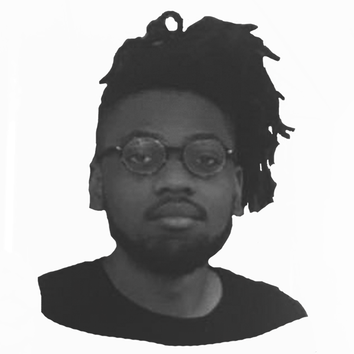
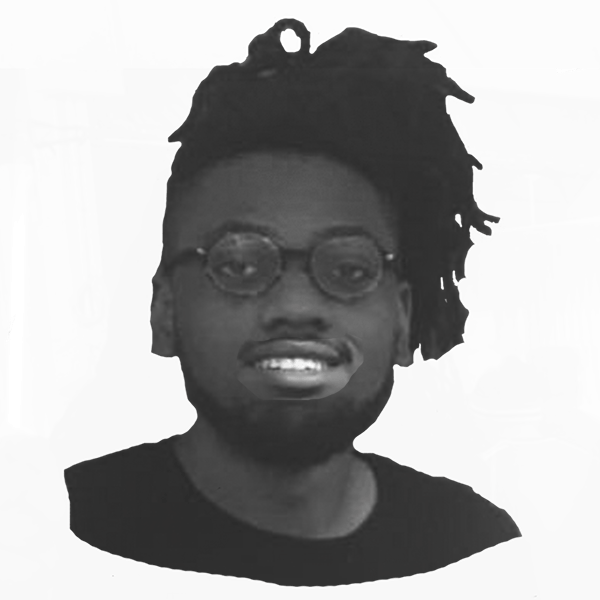
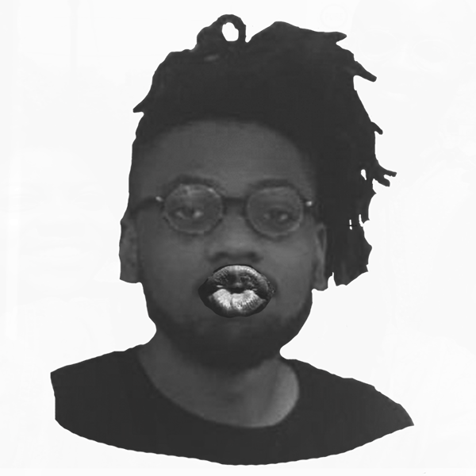

Hello, my name is Juweek Adolphe and I am a creative coder from Brooklyn, NY. What does this mean? It means I design and code visual and interactive things on the internet, usually to make a point.
My project is to work with scientists, politicians, and other professionals to publish visual projects about things I care about. My personal goal is to hone my visual style and skills, and push the idea of content and information.
It's hard to define my style, and I want to change that with a consistent effort and repetition. I enjoy drawing, and want to use this project as an opportunity to explore an illustrative visual style.
I've already started to explore what that could be. Here's a draft of an story I wrote on the future of the cities. And I'm no stranger to creative code; here are two projects I made, one a timeline, the other a demographic breakdown of the newly elected Congress.